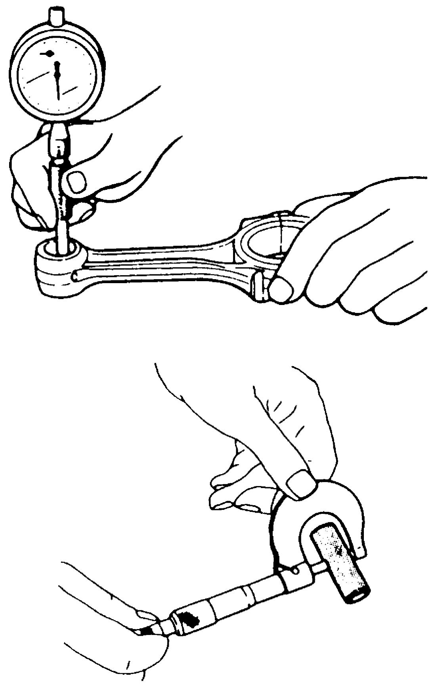

1D
| Piston Pin and Connecting Rod Inspection |
Piston Pin
Visual inspection
Check piston pin, connecting rod small-end bore and piston bore for wear or damage, paying particular attention to condition of small-end bore bushing. If piston pin, connecting rod small-end bore or piston bore is badly worn or damaged, replace piston pin, connecting rod and/or piston.
Piston pin clearance
Check piston pin clearance in small-end.
Replace connecting rod and/or piston, if its small-end is badly worn or damaged or measured clearance is not as specified.
Piston pin clearance in small end
0.018 – 0.032 mm (0.00070 – 0.00125 in.)
Small end bore inner diameter
26.006 – 26.014 mm (1.02385 – 1.02417 in.)
Piston pin outer diameter
25.982 – 25.988 mm (1.02291 – 1.02314 in.)

 "Expand image")
Connecting Rod
Connecting rod weight
Check weight difference between all connecting rods. If weight is difference exceeds limit, replace connecting rods.
Difference of weight between all connecting rods
Limit: –2.5 to 2.5 g